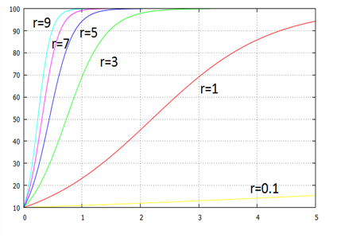
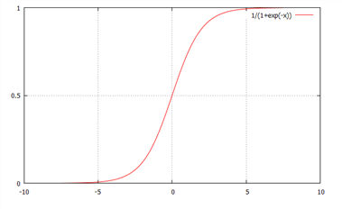
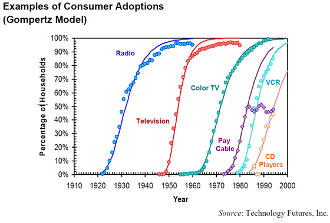
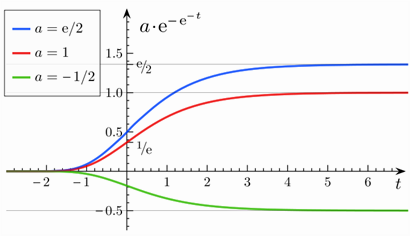
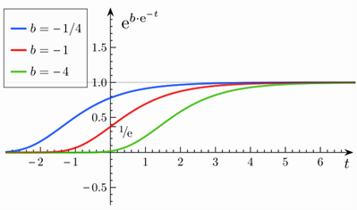
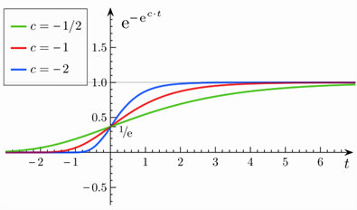

인구동학을 초기에 연구한 학자 가운데 한 사람은 영국 성공회 성직자이자 학자였던 토머스 맬더스(1766~1834)이다. 그의 핵심 생각은 인구의 증가 속도가 현재 인구 규모에 정비례한다는 것이었다.
이를 수식으로 표현하면 인구증가율은
\frac{dN(t)}{dt} \bigg /N\,=r ; 인구증가율이 일정
⇒ \frac{dN(t)}{dt} \,=rN\,(t)...........①
N(t) : 시간 t에서 인구수
r : 상수, 외부요인이 아닌 내재적 성장률, 1인당 성장률(growth rate per capita)
r>0 이면 인구 증가. r<0 이면 인구감소
이는 y ' (t)+ay(t)=0 형태의 미분방정식
①을 정리하면
\frac{dN}{dt} \bigg / N\,=r\,
\rightarrow \, \frac{d}{dt} \,[\ln\,N(t)]\,=r
양변 적분하면
\ln N(t)\,=rt+C_{0}
\rightarrow \,N(t)\,=\,C_{1} \,e^{rt} \,=\,N(0)e^{rt}
예) 어떤 종의 인구는 지수함수적으로 증가한다. 인구가 3500명에서 6445명으로 증가하는데 10년이 걸렸다면 원래 인구가 2배로 되는데 몇 년이 걸리는가?
(풀이)
6445\,=\,3500e^{10r}
⇒ e^{10r} \,=\, \frac{6445}{3500} \,=\,1.8414
양변 log 취하고 r에 대해 풀면
r = 0.061
∴\rightarrow \,N(t)\,=\,3500\,e^{0.061t}
인구수가 2배가 되기 위해서는
\,7000\,=\,3500\,e^{0.061t}
⇒ \;e^{0.061t} \,=2
t\,=\, \frac{\ln 2}{0.061} \,=\,11.35년
예) 일군의 고고학자들이 공룡뼈의 화석을 발견했다. 이 뼈에 남아있는 탄소의 양을 측정했더니 원래의 99%가 감소되어 있음을 알았다. 이 공룡뼈는 얼마나 오래된 것인가?(탄소14의 반감기[43]는 5730년이다.)
(풀이)
질량의 감쇠를 나타내는 모형은
\,m(t)\,=\,m(0)\,e^{-rt} \,,\;r>0
m(t) : t년의 탄소의 질량
반감기가 5730년이라는 말은 m(5730)= \frac{1}{2} m(0)
따라서
\frac{1}{2} m(0)\,=\,m(0)e^{-5730r}
∴r\,=\,1.2 \times 10^{-4}
\,m(t)\,=\,0.01m(0)\,=\,m(0)\,e^{-1.2 \times 10^{-4} t} \,
∴t\,=\,38069.2년[44]
사망률을 고려할 경우
출생률이 r_{\scriptscriptstyle {B}}, 사망률이 r_{\scriptscriptstyle {D}}일 경우 인구증가율은 r_{\scriptscriptstyle {B}} - r_{\scriptscriptstyle {D}}
\frac{dN}{dt} \bigg / N\,=r_{\scriptscriptstyle {B}} \,-\,r_{\scriptscriptstyle {D}}
\rightarrow \,N(t)\,=\,N(0)e^{(r_{\scriptscriptstyle {B}} -r_{\scriptscriptstyle {D}} )t}
성직자이자 초기 경제학자인 토머스 로버트 맬더스(1766~1834)는 인구가 기하급수적으로 증가하는 반면 식량 공급은 산술급수적으로만 증가한다고 보았다. 따라서 인구가 계속 증가하면 결국 제한된 토지와 식량에 비해 인구가 과도해져 빈곤과 기아가 발생하며, 사람들이 스스로 출산을 억제하지 않는다면 이러한 궁핍이 인구 증가를 제약하게 된다고 주장하였다. 이것이 사회악(社會惡)이나 빈곤의 원인이며 빈곤은 이러한 자연적 조건에 의한 것이지 사회제도에 의한 것이 아니라고 본다. 따라서 인위적인 구제(救濟)로는 불가능하고, 유행병·전쟁·기근 등의 자연적 조건에 의한 인구증가의 방지를 기다리는 수밖에 없다고 하였다.
인구가 기하급수적으로 증가한다는 이론은 인구증가율 감소를 맞고 있는 선진국의 현실에 맞지 않는 이론. 수학적으로 인구가 기하급수적으로 증가해야 하지만 결혼 연령의 지체, 출생아들의 감소 등으로 인해 인구 증가율이 감소.
감소 원인으로는 자체적 조절기능, 또는 부존자원의 제약으로 인한 감소가 있다. 이를 반영한 모형이 로지스틱 모형, 곰페르츠 모형이다.
현실에서는 이러한 성장률이 무한정 지속될 수 없다. 단순 지수성장모형은 자원 제약이나 질병 같은 요인을 무시하기 때문이다. 시간이 흐를수록 성장률은 둔화하여 결국 0에 가까워질 것으로 예상할 수 있다.
자연적인 성장 과정은 일정한 환경수용력(carrying capacity)을 가진 영역을 처음부터 포화 상태까지 채워 가는 과정으로 볼 수 있다. 인구나 동물 개체군의 성장, 전염병·기술혁신의 확산, 신제품 시장의 성장, 생물의 신체 성장 등은 이러한 과정에 해당하며 로지스틱 곡선으로 설명할 수 있다.
학습 과정도 일종의 자연적 성장 과정이므로 로지스틱 곡선을 학습곡선(learning curve)이라고도 한다. 개인이나 집단이 새로운 과업이나 주제를 학습할 때 정보가 조금씩 누적되다가 필요한 지식이 충분히 축적되면 증가 속도가 둔화하는 형태를 보일 수 있다.
그러나 보다 현실적인 상황에서는 성장에 한계가 존재한다.
예를 들어 공간이나 식량은 유한하다. 보다 현실적인 모형에서는 개체군이 자원을 두고 자기 자신과 경쟁한다고 본다. 인구가 증가할수록 1인당 성장률은 선형적으로 감소한다.
이때의 미분방정식을 로지스틱 방정식(logistic equation)이라고 한다.
\frac{dN}{dt} \bigg /N\,=r \left( 1- \frac{N}{K} \right) ; K : 인구상한(carrying capacity)[45]
이는 맬더스모형에 \left( 1- \frac{N}{K} \right)를 곱한 것으로, 맬더스의 인구증가율이 r이라면 로지스틱곡선의 인구증가율은 r \left( 1- \frac{N}{K} \right)이 된다.
맬더스와 달리 무한정한 인구증가를 배제하고 인구가 인구상한인 K까지만 증가할 것이라는 가정을 도입한 것이다. 초기상태에서 N이 작으므로 (N이 0에 가깝다면) 인구증가율은 일정 성장률에 가까울 것이므로 앞의 맬더스 성장률로 성장한다. 그러나 시간이 흐르고 N이 증가하여 K에 가까와짐에 따라 r \left( 1- \frac{N}{K} \right)은 0에 근접하므로 성장률은 줄어든다. 이러한 현상은 아래의 로지스틱곡선에서 알 수 있다.
\frac{dN}{dt} \,=rN \left( 1-\frac{N}{K} \right) ; 베르훌스트 로지스틱 미분방정식[46]
이 미분방정식은 다음 두 가지 방법으로 풀 수 있다.
ⅰ) 베르누이방정식 이용
\frac{dN}{dt} =rN- \frac{r}{K} N^{2}
양변을 N^{2}으로 나누면(N != 0)
\frac{1}{N^{2}} \frac{dN}{dt} =r \frac{1}{N} - \frac{r}{K}..........①
\xi = \frac{1}{N}라 하면
\frac{d \xi }{dt} \,=\,- \frac{1}{N^{2}} \frac{dN}{dt}
위를 대입하여 ①을 다시 쓰면
- \frac{d \xi }{dt} \,=\,r \xi \,-\, \frac{r}{K}
⇒\frac{d \xi }{dt} \,+\,r \xi \,=\, \frac{r}{K}
y'(t)+ay(t)=b 형태의 해는 y(t)= \frac{b}{a} + \left( y(0)- \frac{b}{a} \right) e^{-at}
\xi (t)\,=\, \frac{\frac{r}{K}}{r} + \left[ \xi (0)- \frac{\frac{r}{K}}{r} \right] e^{-rt}
\,=\, \frac{1}{K} + \left[ \frac{1}{N(0)} - \frac{1}{K} \right] e^{-rt} , where \xi (0)= \frac{1}{N(0)}
∴N(t)= \frac{1}{\frac{1}{K} + \left[ \frac{1}{N(0)} - \frac{1}{K} \right] e^{-rt}} \,
\,=\, \frac{KN(0)}{N(0)+ \left[ K-N(0) \right] e^{-rt}} : 베르훌스트 로지스틱 곡선
ⅱ) 변수분리방법
\frac{dN}{dt} \,=rN \left( 1-\frac{N}{K} \right)
⇒ \frac{dN}{dt} \,=- \frac{r}{K} N \left( N-K \right)
⇒ \frac{KdN}{N(N-K)} \,=- {r} dt
양변 적분하면
\int \frac{KdN}{N(N-K)} \,= \int {-} rdt\,=\,-rt+C_{1}...........①
한편 위식의 왼쪽 적분은
\int \frac{KdN}{N(N-K)} \,= \int {\left( \frac{1}{N-K} - \frac{1}{N} \right) dN} \,=\,\ln \left | N-K \right | -\ln \left | N \right | +C_{2}.........②
②를 ①에 대입하면
\ln \left | N-K \right | -\ln \left | N \right | +C_{2} \,=\,-rt+C_{1}
⇒ \ln \left | \frac{N-K}{N} \right | \,=\,-rt+C_{3} , where C_{3} \,=\,C_{1} -C_{2} .............②’
⇒ \frac{K-N}{N} \,=\,C_{4} e^{-rt} , where C_{4} \,=e^{C_{3}} \, , (∵K>N)
⇒ N(t)\,=\, \frac{K}{1+C_{4} e^{-rt}}...........③
N(0)\,=\, \frac{K}{1+C_{4}} 이므로
∴ C_{4} \,=\, \frac{K-N(0)}{N(0)} ..........④
④를 ③에 대입하면
N(t)\,=\, \frac{K}{1+ \frac{K-N(0)}{N(0)} e^{-rt}} =\, \frac{KN(0)}{N(0)+ \left[ K-N(0) \right] e^{-rt}}
②’ 에서
\frac{K-N(t)}{N(t)} \,=\,e^{-rt+C_{3}} \,=\,e^{-r(t-t*)} , where C_{3} \,=\,t*
초기조건을 대입하면
\frac{K-N(0)}{N(0)} \,=\,e^{rt*} , where t*\,는 변곡점으로 N(t*)= \frac{K}{2}.........[47]
∴ N(t)\,=\, \frac{K}{1+e^{-r(t-t*)}}
계수 r은 시스템 자체의 성장 능력을 나타낸다. 학습 과정에 적용하면 개인이나 집단의 학습률을 의미한다.
ⅰ) \, \lim\limits_{t \to \infty } {N(t)} =\, \lim\limits_{t \to \infty } \frac{KN(0)}{N(0)+ \left[ K-N(0) \right] e^{-rt}} \,=\,K
인구는 궁극적으로 환경수용력 K에 수렴한다. 초기값이 양수라면 초기 인구가 K보다 작거나 큰 경우와 관계없이 K에 점근적으로 접근한다는 점이 중요하다.
ⅱ) 상대적 성장률 \frac{1}{N} \frac{dN}{dt}는 인구가 증가함에 따라 선형으로 감소
ⅲ) 변곡점은 인구상한(K)의 1/2에서 결정. 변곡점은 인구증가율이 가장 빠른 점이다.
(증명)
변곡점은 2차 미분이 0이 되는 점이므로
\frac{dN}{dt} =rN- \frac{r}{K} N^{2} 을 미분하면
\frac{d^{2} N}{dt^{2}} =r \frac{dN}{dt} - \frac{r}{K} 2N \frac{dN}{dt} \,=0
⇒ r- \frac{r}{K} 2N\,=0
∴ N= \frac{K}{2}인 점에서 변곡점이 발생한다. 확산모형을 의미할 경우 시장점유율이 1/2인 지점에서 발생
이 때의 t값은
\, \frac{KN(0)}{N(0)+ \left[ K-N(0) \right] e^{-rt}} \,=\, \frac{K}{2}
⇒ \,N(0)+ \left[ K-N(0) \right] e^{-rt} \,=\,2N(0)
⇒ \, e^{-rt} \,=\, \frac{N(0)}{ K-N(0) }
양변 ln을 취하면
t\,=\, \frac{\ln[K-N(0)]-\ln N(0)}{r}
그림) K=100, N(0)=10 일 때 r에 따른 로지스틱곡선

베르훌스트 로지스틱 방정식
\frac{dN}{dt} \,=rN \left( 1-\frac{N}{K} \right) 에서 양변을 K으로 나누면
\frac{d}{dt} \frac{N}{K} \,=r \frac{N}{K} \left( 1- \frac{N}{K} \right) , (∵\frac{d}{dt} \left( \frac{N}{K} \right) \,= \frac{1}{K} \frac{dN}{dt} , K는 상수)
\frac{N}{K} \,=\,x 라 하면
\frac{dx}{dt} \,=rx \left( 1-x \right)
이 미분방정식을 위와 같은 방법으로 풀면
\frac{dx}{dt} \,-rx\,=\,-rx^{2}
양변을 x^{2}로 나누면(x != 0)
\frac{1}{x^{2}} \frac{dx}{dt} \,-r \frac{1}{x} \,=\,-r ...........①
y= \frac{1}{x} 라 하면
\frac{dy}{dt} =- \frac{1}{x^{2}} \frac{dx}{dt}
위 식을 ①에 대입하면
- \frac{dy}{dt} \,-ry\,=\,-r
⇒ \frac{dy}{dt} \,+ry\,=\,r
y'(t)+ay(t)=b 형태의 해는 y(t)= \frac{b}{a} + \left( y(0)- \frac{b}{a} \right) e^{-at}
이 미분방정식을 풀면
y(t)=1+ \left[ y(0)-1 \right] e^{-rt}
∴ x(t)= \frac{1}{1+ \left( \frac{1}{x(0)} -1 \right) e^{-rt}}
x(0)= \frac{1}{2}라 놓으면
x(t)= \frac{1}{1+e^{-rt}}
이는 일반적인 로지스틱곡선이다.

로지스틱 함수는 혁신이 생애주기를 따라 확산되는 과정을 설명하는 데 사용할 수 있다. 신제품이 도입되면 초기에는 연구개발이 활발하여 품질이 크게 개선되고 비용이 빠르게 하락하면서 산업이 급성장한다. 이후 개선과 비용절감의 여지가 줄고 제품이나 공정이 널리 보급되어 잠재 신규 고객이 감소하면 시장은 포화 상태에 가까워진다.
운하·철도·고속도로·항공 등 사회기반시설의 확산도 로지스틱 형태의 곡선을 따르는 사례로 분석되어 왔다.[48]
영국의 보험계리학자 벤저민 곰페르츠는 1825년 고령자의 사망률을 설명하기 위한 간단한 공식을 제안했다. 그는 19세기 영국·스웨덴·프랑스의 20~60세 자료에서 연령이 높아질수록 사망률이 기하급수적, 즉 지수적으로 증가하는 규칙성을 관찰했다.
성장하는 종양의 세포 수 N의 변화는 흔히 곰페르츠 방정식으로 나타낸다.
\frac{dN}{dt} \bigg / N\,= \beta \,\ln \left( \frac{K}{N} \right) , \beta는 상수 (∵e>1, K>N)
\frac{d}{dt} \left[ \beta \,\ln \left( \frac{K}{N} \right) \right] \,=\, \beta \frac{N}{K} \left( - \frac{K}{N^{2}} \right) <0
인구증가율이 대수적으로 증가하나 증가율은 체감한다.
위 식을 다시 쓰면
\frac{dN}{dt} \,= \beta \,\ln \left( \frac{K}{N} \right) N
이 미분방정식을 풀기위해 변수분리방법 적용
\frac{dN}{\ln \left( \frac{K}{N} \right) N} \,= \beta \,dt\,
양변 적분하면
\int \frac{dN}{\ln \left( \frac{K}{N} \right) N} \,= \beta t+C_{1} \,
u\,=\,\ln \left( \frac{K}{N} \right) 라 하면
du\,= \frac{N}{K} \, \left( - \frac{K}{N^{2}} \right) dN\,=- \frac{1}{N} dN\,
∴ \int {-} \frac{du}{u} \,= \beta t+C_{1} \,
⇒ -\,\ln \left | u \right | = \beta t+C_{1}
⇒ -\,\ln \left | \,\ln \left( \frac{K}{N} \right) \right | = \beta t+C_{1}
⇒ \,\ln \left( \frac{K}{N} \right) =e^{- \beta t-C_{1}} \,=C_{2} e^{- \beta t} ........① ,where C_{2} \,=\,\pm e^{-C_{1}}
한편 C_{ 2}는
\,\ln \left( \frac{K}{N(0)} \right) =C_{2} \,>0
이를 ①에 대입하면
\,\ln \left( \frac{K}{N} \right) =\,\ln \left( \frac{K}{N(0)} \right) e^{- \beta t}
∴ \,N(t)=\, \frac{K}{e^{\,\ln \left[ {K} / {N(0)} \right] e^{- \beta t}}}
\, \lim\limits_{t \to \infty } N(t)=\, \lim\limits_{t \to \infty } \frac{K}{e^{\,\ln \left[ K/N(0) \right] e^{- \beta t}}} \,=\,K
\frac{dN}{dt} \,= \beta \,\ln \left( \frac{K}{N} \right) N 이므로
\frac{d^{2} N}{dt^{2}} \,= \beta \left[ \frac{N}{K} \, \left( - \frac{K}{N^{2}} \right) N\,+\,\ln \left( \frac{K}{N} \right) \right] \frac{dN}{dt} \,=0
∴ \frac{N}{K} \, \left( \frac{K}{N^{2}} \right) N\,=\,\ln \left( \frac{K}{N} \right)
⇒ \,\ln \left( \frac{K}{N} \right) \,=1
⇒ N(t)\,=\, \frac{K}{e}
N(t)\,=\, \frac{K}{e} 를 중심으로 \frac{d^{2} N}{dt^{2}} \,의 부호가 바뀌므로 N(t)\,=\, \frac{K}{e}가 변곡점.
회귀분석을 위해 일반적으로 곰페르츠방정식은 다음의 형태를 띈다.
y(t)\,=\,ae^{be^{ct}}
a : 상한, \lim\limits_{t \to \infty } {y(t)=a}
c : 성장률 (b, c < 0)
a,b,c를 적당히 조절함으로서 확률분포를 만들 수 있다.
a=e, b=-1, c=1 이면
y(t)\,=\,e^{1-e^{t}}
이를 생존함수라 하면
cdf는
F(t)\,=\,1-y(t)\,=\,1-e^{1-e^{t}}
F(0)\,=\,1-e^{1-e^{t}} \,=\,0
\lim\limits_{t \to \infty } F(t)\,=\, \lim\limits_{t \to \infty } \,1-e^{1-e^{t}} \,=\,1
따라서 cdf의 성질을 만족
pdf는
f(t)= \frac{dF(t)}{dt} \,=\,-e^{1-e^{t}} (-e^{t} )\,=\,e^{t+1-e^{t}}
곰페르츠 함수는 시계열의 성장 과정에서 초반과 후반의 성장 속도가 느린 모형이다. 로지스틱 함수가 양쪽 점근선에 대칭적으로 접근하는 것과 달리, 곰페르츠 곡선은 오른쪽의 장기 점근선에 훨씬 더 완만하게 접근한다.[49]
휴대전화 보급: 초기에는 가격이 높아 보급이 느리다가 급속한 성장기를 거친 뒤 시장이 포화되면서 다시 둔화한다.
제한된 공간의 개체군: 처음에는 출생 증가로 빠르게 성장하지만 자원 제약이 커지면서 성장 속도가 둔화한다.
종양 성장의 모형화

(출처) http://www.tfi.com/pubs/w/pdf/ti_broadband.pdf
곰페르츠 곡선에서 a, b, c 가운데 하나만 변화시키고 나머지를 일정하게 유지했을 때의 효과를 나타낸 그래프



(출처) http://en.wikipedia.org/wiki/Gompertz_function
모든 방사성 동위원소는 시간이 지남에 따라 현재 질량의 일정비율로 감소한다.
http://terms.naver.com/entry.nhn?docId=293716&mobile&categoryId=354
↩공룡의 생존시대는 대략 1억5천만년전에서 6500만년전으로 추정. 탄소연대 측정법(오차범위가 수십년)은 3만년보다 오래된것은 쓸수가 없다. 그래서 화석은 주로 칼륨-아르곤 연대측정법이 주로 사용. 근데 (탄소14를 제외한)연대측정법은 화성암에만 사용 가능. 그래서 과학자들은 지층 사이에 끼어있는 화성암을 이용해서 해당 지층의 연대를 알아내죠. 이런식으로 조사를 하니 공룡화석이 대략 6500만년 이상된 지층에서는 전혀 발견이 않된다는 것을 알아낸 겁니다. 따라서 공룡은 그 전에 모조리 죽어버렸다고 추측하는 거죠.
↩收容能力 : 일정한 삶의 질을 지속적으로 유지할 수 있는 수준에서 일정 지역이 지탱할 수 있는 인구밀도. http://terms.naver.com/entry.nhn?docId=303844&mobile&categoryId=2891
環境收容力 : 한 생태계에서 개체군의 수(혹은 밀도)가 증가할 수 있는 최대치로서 K로 표시. 개체군의 증식이 시간이 경과함에 따라 무한정 계속되는 것이 아니라 환경의 저항 때문에 K값 이상의 증가는 불가능함. 최근에는 환경 수용력이 기후 환경이 바뀜에 따라 시대적으로 달라진다는 주장이 보편적으로 받아들여짐. http://terms.naver.com/entry.nhn?docId=373674&mobile&categoryId=2908
↩또는 Verhulst-Pearl equation. A typical application of the logistic equation is a common model of population growth, originally due to Pierre-François Verhulst in 1838, where the rate of reproduction is proportional to both the existing population and the amount of available resources, all else being equal. Verhulst derived his logistic equation to describe the self-limiting growth of a biological population.
↩아래 ‘변곡점’ 참조
↩http://en.wikipedia.org/wiki/Logistic_function
↩http://en.wikipedia.org/wiki/Gompertz_function
↩http://en.wikipedia.org/wiki/Gompertz_function
↩← 처음 · 절별 목차 · Bass 확산과 종족경쟁 →